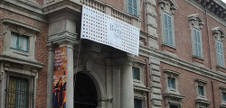

Галерея Амвросиана
Милан, Piazza Pio XI, 2
Картинная галерея Амвросиана считается самым первым миланским музеем, ведь основана она была еще в начале XVII века в роскошном архиепископском дворце. В старинных залах хранятся полотна таких великих метров как Рафаэль, Караваджо, Тициан, Леонардо да Винчи.
Галерея Брера
Милан, Via Brera, 28
Картинная галерея Брера располагает таким количеством полотен выдающихся мастеров, какого больше нет во всей Европе. Эту галерею основал еще Наполеон на заре XIX века, экспроприировав все самые ценные полотна у монастырей.
Галерея Витторио Эммануэле II
Милан, Piazza del Duomo
Галерея Витторио Эммануэле II (Galleria Vittorio Emanuele II) — один из старейших торговых пассажей в мире, которые местные называют просто «гостиной Милана». Расположенная в самом сердце города, эта торговая галерея соединяет две красивейшие площади.
Дуомо
Милан, Piazza del Duomo
Наверное, сложно встретить человека, которого роскошное готическое здание Миланского собора оставило бы равнодушным. Кафедральный собор Девы Марии Нашенте — крупнейший в мире, он вмещает до сорока тысяч человек одновременно, к тому же ему нет равных по красоте внешнего и внутреннего убранства.
Замок Сфорца
Милан, Piazza Castello
Не обошлось в Милане и без замков. Самым популярным из них — Замок Сфорца, построенный в середине 15 века. Особенно интересен он будет туристам из России. Чем замок так примечателен?
Ла Скала
Милан, Via Filodrammatici, 2
Самый известный оперный театр мира находится в Италии, и имя ему — Ла Скала. На протяжении уже трех веков он является местом встреч миланской аристократии, сюда мечтают попасть все настоящие ценители оперного искусства и просто ценители прекрасного.
Базилика Сан-Лоренцо-Маджоре
Милан, Via Filodrammatici, 2
Второй по размерам миланский храм — базилика Сан-Лоренцо-Маджоре был построен на рубеже 4 и 5 веков, имен зодчего и заказчика история не сохранила, освятили церковь во имя святого Лаврентия только в 590 г.
Агломерация Милана или Большой Милан занимает площадь 1 982 км². Подразделяется на 9 городских районов или зон.Численность населения Милана на 2020 год составляет — 1,236,837 чел. (это 2.05% от общего населения страны). Милан находится на #3 месте по численности населения в Италии.